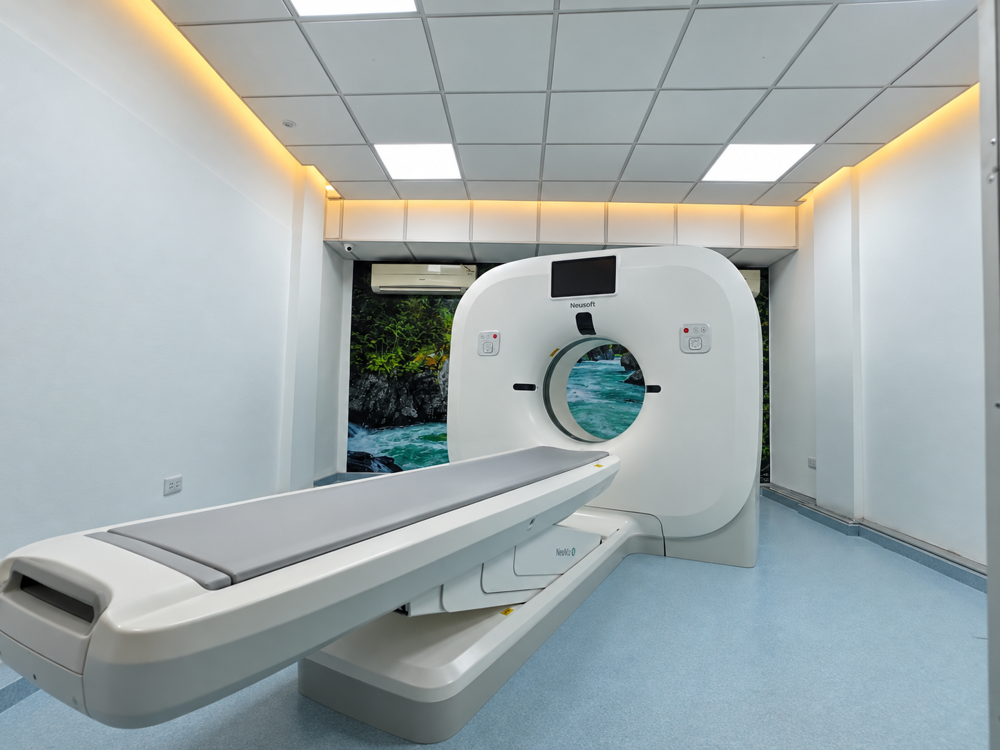

Medicina con
experiencia y tecnología
Diagnóstico por imágenes a la vanguardia para obtener el enfoque médico que mereces.

◉ TOMOGRAFÍA
≋ ECOGRAFÍA
▣ RADIOGRAFÍA DIGITAL
Atención y tecnología, aplicadas al diagnóstico médico correcto.
SERVICIOS
PARA PROFESIONALES
Accede a informes e imágenes de tus pacientes desde nuestra plataforma.
ACCEDER AL PORTAL MÉDICO →CT
CEDISA
Imagenología Diagnóstica
Experiencia y tecnología orientadas a brindar información diagnóstica útil para pacientes y profesionales.
PLANTEL PROFESIONAL
Lic. Ximena Solis
Dirección General
Ing. Armando Brianson
Gestión Administrativa
Dr. Alfredo Choquet
Especialista en Radiología
Dra. Cecilia Arancibia
Especialista en Radiología
Dra. Varinia Vidal
Ecografía
PACIENTES
Consulta tus estudios
Accede a tus informes e imágenes mediante nuestra plataforma.
CONTACTO
Agenda tu estudio.
Comunícate con CEDISA para consultar disponibilidad, preparación y horarios.